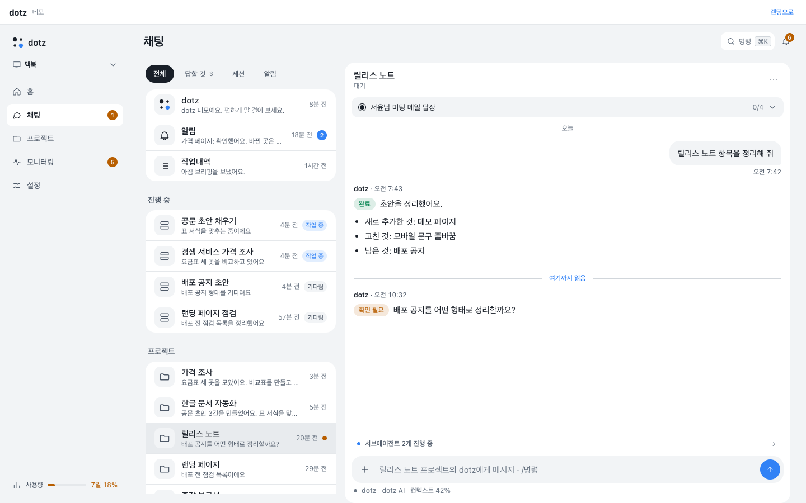

dotz
내 맥에서 항상 켜져 있는 개인 비서.
메일과 일정, 댓글을 대신 챙기고 답장 초안까지 써 둬요. 폰이나 쓰던 메신저로 말을 걸면 되고, 밖으로 나가는 건 내가 보내기를 눌러야만 나가요.
curl -fsSL https://raw.githubusercontent.com/ddotz/dotz/main/install.sh | sh
내 정보는 내 맥에 둬요
비서에게 메일과 계정을 맡기는 만큼, 무엇이 어디에 남고 언제 밖으로 나가는지 분명하게 정해 두었어요.
-
내 맥에서 돌아가요
비서는 내 컴퓨터에서 백그라운드로 돌아요. 설정, 기억, 규칙, 메일 기록은 내 맥의 dotz 폴더에 남고, 따로 가입하는 서버가 없어요.
-
내가 보내기를 눌러야 나가요
메일 답장, 유튜브·인스타 댓글, 메신저 메시지는 먼저 초안으로 보여 줘요. 확인 카드에서 내가 보내기를 골라야만 실제로 나가요.
-
비밀번호는 대화에 안 남아요
토큰과 비밀번호는 내 맥의 비밀 폴더에 나만 읽을 수 있는 권한(0600)으로 저장해요. 카드 번호나 인증 코드 같은 정보는 채팅이 아니라 따로 마련된 보안 입력으로만 받아요.
-
2단계 인증은 허락을 받고
로그인을 다시 하다가 휴대폰 인증 같은 사람 확인이 필요하면, 먼저 나에게 물어보고 허락한 뒤에만 진행해요.
-
위험한 명령은 미리 막아요
실행하면 안 되는 명령은 실행 직전에 막아요. 기본 차단 목록이 들어 있고, 내 규칙에 막을 명령을 더 적어 둘 수도 있어요.
이렇게 써요
평소에 하던 일을 말로 부탁하면 돼요. 몇 가지 예를 모아 봤어요.
-
메일 정리와 답장 초안
새 메일을 세 줄로 요약해 보여 주고, 답장이 필요한 메일엔 내 말투로 초안을 써 둬요. 고쳐 달라고 하거나 보내기를 누르면 그대로 처리해요. API가 없는 웹메일도 브라우저 로그인으로 읽을 수 있어요.
-
아침 점검 루틴
"매일 아침 9시에 오늘 일정이랑 새 메일 정리해 줘"처럼 부탁하면 루틴으로 저장돼서 정해진 시간마다 알아서 돌아요. 밤 시간에는 알림 없이 모아 두기만 할 수도 있어요.
-
유튜브·인스타·웹사이트 댓글
고른 채널과 계정의 새 댓글을 모아 두고, 질문이나 감사 인사엔 답글 초안을 써요. 광고나 스팸은 건너뛰어요. 채널 통계 보기와 영상 예약 게시도 승인을 받고 해요.
-
지켜보다가 알려 주기
사이트 로그인이 풀리지 않게 유지하고, 바뀐 게 있을 때만 알려 줘요. 폰에 설치한 웹 앱으로 푸시 알림을 받을 수 있어요.
-
프로젝트와 작업 채널
프로젝트마다 대화방이 하나씩 생겨서 일이 섞이지 않아요. 진행 상황은 그 방으로 올라오고, 끝나면 결과를 정리해서 알려 줘요.
-
웹 앱과 폰
맥에 띄운 웹 앱을 폰에서 열어 홈 화면에 추가하면 앱처럼 써요. 대화, 알림, 확인 카드, 작업 내역을 한곳에서 봐요.
-
여러 대의 컴퓨터
집 맥과 회사 맥처럼 dotz를 여러 대에 깔면 웹 앱에서 컴퓨터를 바꿔 가며 볼 수 있어요. "저쪽 맥에서 이어서 해"라고 하면 일을 넘겨요.
-
나에게 맞춰 늘리기
자주 보는 앱과 루틴은 홈 카드와 사이드바에 붙여 둬요. 메일, 유튜브 같은 앱도 "이런 앱 만들어 줘"라고 부탁해서 추가해요.
메신저와 앱 연결
쓰던 메신저에서 그대로 말을 걸 수 있어요. 대부분 설치 마법사나 웹 앱의 설정 → 메신저에서 켜요.
-
Discord
대화, 알림, 프로젝트별 채널을 모두 써요. 연결: 내가 만든 Discord 봇의 토큰을 넣고 봇을 내 서버에 초대해요.
-
웹 앱 (폰·PC)
가장 기본이 되는 화면이에요. 연결: Tailscale로 내 기기끼리만 열거나, Cloudflare 터널로 열고 패스키로 한 번 등록한 기기만 들어오게 해요.
-
Telegram
대화를 주고받고 알림을 받아요. 연결: BotFather로 만든 텔레그램 봇 토큰을 넣어요.
-
Slack
알림과 보고를 받는 용도예요. 연결: Slack 봇 토큰과 받을 채널을 정해요. Slack에서 말을 거는 건 아직 안 돼요.
-
잔디(JANDI)
대화와 알림을 주고받아요. 연결: 잔디 웹훅(받기·보내기)을 방마다 붙여요. 웹훅을 못 만드는 경우엔 내 잔디 로그인으로 "나와의 대화"를 읽는 방법도 있어요.
-
메일·캘린더
메일 요약, 답장 초안, 일정 확인을 해요. 연결: 메일·캘린더 도구(zele)에서 내 계정으로 로그인해요. 그게 안 되는 웹메일은 브라우저 로그인으로 연결해요.
-
유튜브·인스타그램
댓글 답글, 통계, 예약 게시를 해요. 연결: 공식 API로 로그인해요. 유튜브는 구글 계정 동의, 인스타는 프로페셔널 계정과 Meta 앱 토큰이 필요해요.
-
웹사이트 댓글
내 사이트의 새 댓글을 모아 답글 초안을 써요. 연결: 사이트가 주는 API나 RSS, 또는 관리자 페이지 로그인으로 가져와요.
어떻게 움직이나
메신저나 웹 앱으로 부탁하면 내 맥의 비서가 일을 나눠 처리하고, 결과와 확인 요청을 다시 대화로 돌려줘요.
부탁
내 맥
할 일
확인
5분 설치
터미널에 명령 하나를 붙여 넣으면 필요한 것을 깔고 설정 마법사가 열려요.
-
설치
첫 번째 명령은 설치와 마법사까지, 두 번째는 컴퓨터를 켤 때마다 비서가 저절로 시작되게까지 해 줘요.
설치와 마법사
curl -fsSL https://raw.githubusercontent.com/ddotz/dotz/main/install.sh | sh항상 켜 두기까지
curl -fsSL https://raw.githubusercontent.com/ddotz/dotz/main/install.sh | sh -s -- --service -
마법사
비서 이름과 말투, 연결할 메신저, 폰에서 열 방법을 차례로 물어요. 맥에서 필요한 권한도 이때 함께 정리해요.
-
말 걸기
마법사가 알려 준 웹 앱 주소를 폰에서 열거나 메신저에서 말을 걸어요. 메일, 유튜브 연결은 "메일 연결해 줘"처럼 부탁하면 비서가 순서대로 안내해요.
업데이트해도 내 설정은 그대로
설정, 비밀, 기억, 규칙은 프로그램 폴더와 떨어진 내 dotz 폴더에 따로 둬요.
업데이트는 공개 저장소에서 바로 받아 오고, 프로그램이 바뀌어도 내 기록과 설정은 남아요.
그래서 저장소를 복사(포크)할 필요 없이 설치하면 돼요.